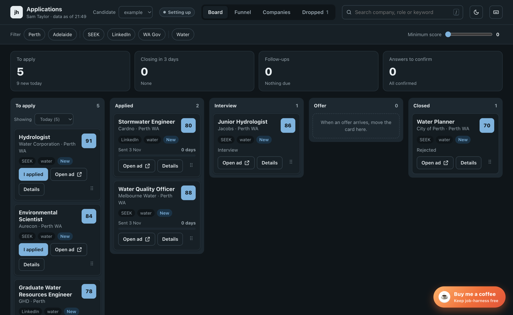
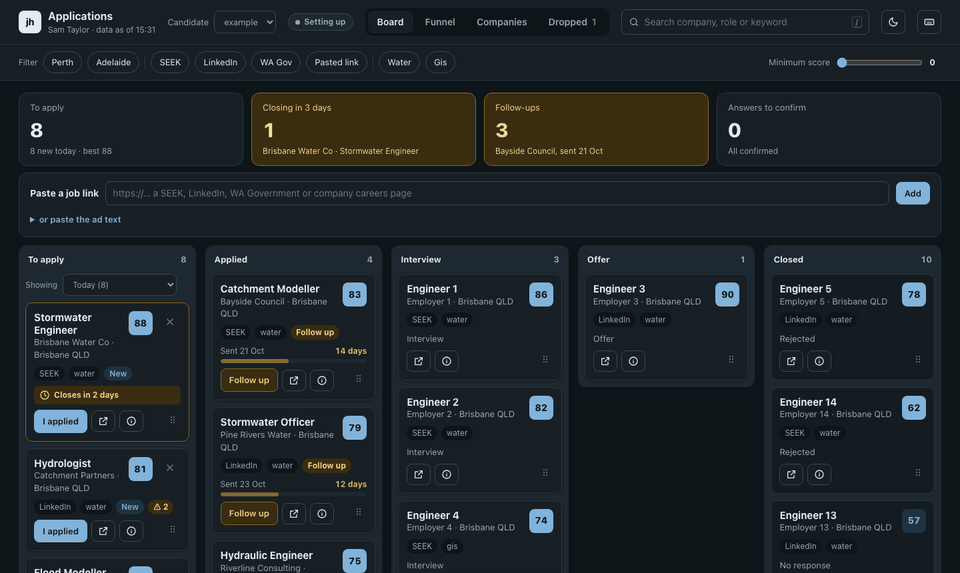
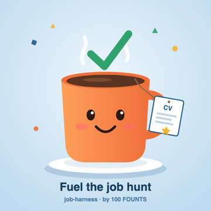

Find the jobs worth applying to. Send honest applications.
job-harness is a free, open-source harness for Claude Code for job seekers in Australia. Every day it finds new jobs on SEEK, LinkedIn and WA Government Jobs, ranks them against your rules, and prepares a CV and cover letter for the best ones. You open the ad, click Apply and upload the files. It runs on your own computer.

job panel), shown with sample data for a fictional candidate. It opens in your browser and only your computer can reach it.
Who it is for
People applying for many jobs
If you check SEEK and LinkedIn by hand every day, it does the searching and the first read for you and leaves a short, ranked list.
People who want honest documents
Every figure in a CV or letter must come from your own facts file. It does not invent experience, dates or numbers.
People who want to stay in control
Nothing is sent for you by default. You decide which ads to apply to and you press the final button yourself.
You need a paid Claude plan (Pro, Max, Ultra, Team or Enterprise) with Claude Code, on macOS, Windows or Linux. Windows and Linux pass the automated tests on every change but have had little day-to-day use so far.
What happens each day
- Discover. New ads from your saved searches. Public pages only: no browser, no login, no AI.
- Filter. Your rules: target titles, seniority, years asked, citizenship or clearance requirements, places.
- Rank. Fit (your keywords in the ad) plus odds (level, years, credentials you lack). It orders the list; you decide.
- Prepare. Up to 15 CVs and cover letters (docx and PDF), each checked for invented figures and rule breaks.
- Package. A summary per job: what it is, why it fits, what to watch, how to apply.
The daily run is plain scripts. It costs nothing and uses no paid service. Setting up your profile, tailoring the best jobs and interview practice use your own Claude plan.
Install
As a Claude Code plugin
claude plugin marketplace add 100FOUNTS/job-harness
claude plugin install job-harness@100founts
claude # then type: /job-harness:job-startIn the Claude desktop app, open the Code tab and type /plugin marketplace add 100FOUNTS/job-harness, then /plugin install job-harness@100founts. Your data lives in ~/job-harness-data, outside the plugin, so updates never touch it.
From a clone
git clone https://github.com/100FOUNTS/job-harness.git
cd job-harness
bin/job setup # Windows: bin\job.cmd setup
claude # open Claude Code in this folderThen schedule the daily run with job schedule install <name> --hour 9. It uses launchd on macOS, Task Scheduler on Windows and a systemd user timer (or a crontab line) on Linux.
How it keeps you safe
| Rule | How it is enforced |
|---|---|
| Dry-run by default | New candidates start in dry-run. The daily schedule only prepares documents unless you choose a submitting mode. |
| Never submits without go-live | A go-live approval, signed by you and sealed with a sha256 of your files, is required before anything is submitted. Edit those files later and the seal breaks. |
| No invented figures | job facts verify rejects any number in a CV or letter that is not in your own facts file. job lint checks your rules and an ATS-safe format. |
| Guard hooks | A hook blocks Claude from signing as you, reading secrets, deleting your data or clicking submit outside a live mode, and asks you before changing the harness's own rules. |
| Ads are data | Hidden text is stripped from every ad and ads aimed at an AI are flagged. Claude never follows what an ad says. |
| No tricks | It never solves captchas, creates accounts, types passwords or accepts new terms for you. Those steps are left to you. |
| Your files stay with you | There is no server. What Claude reads in a session (your CV, the ads) is processed by Claude under your own plan. |
The hook is pattern-based: it stops mistakes and casual workarounds, not deliberate obfuscation. Scripted applying (an optional mode) is against LinkedIn's terms and likely SEEK's; the default flow does not do it.
No Claude Code? The lite version
Three standalone skills you upload to claude.ai or Cowork: review a job ad against your CV, tailor a CV and cover letter to one ad, and prepare for an interview. No terminal and no install. They have none of the daily search, the panel or the automatic checks, so read what they write before you send it. How to upload them.
Honest limits
- Built for Australia. Another country needs its own sources and question rules; help is welcome.
- Job sites change their pages. When one does, a search returns nothing until the harness is updated.
- The ranking is keyword and rule scoring, not a prediction of who gets hired.
- Some application systems (Workday, PageUp and others) need an account, so they are always left to you.
Read more
- README: everything in one place
- Getting started: from nothing to your first daily package, no terminal
- Troubleshooting: "0 jobs found", schedules that did not run
- Guía rápida en español
- Changelog and contributing
Support

job-harness is free, open source and uses no paid services. If it helped your job search, a coffee keeps it going.